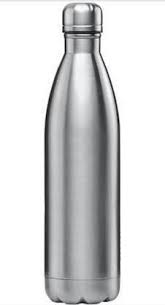

Which is more accurate?
Microsoft Azure or MobileNet
The image:

MS Azure showed: A close up of a bottle
MobileNet showed: Water bottle
Mobilenet is more accurate!
The image:

MS Azure showed: A close up of a flower
MobileNet showed: Spatula (I tried 3 times and its result was same.)
MS Azure is more accurate!
The image:

MS Azure showed: Close up of a device
MobileNet showed: cellular telephone, cellular phone, cellphone, cell, mobile phone
Mobilenet is more accurate!
The image:

MS Azure showed: A cat lying on a bed
MobileNet showed: Tiger cat
MS Azure is more accurate!
The image: